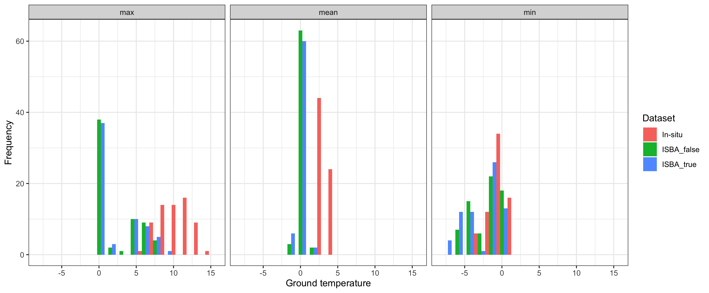

Match-up & Results
11/10/2021
R Library
library(readxl)
library(ncdf4)
library(raster)
library(tidyverse)
library(ggforce)
library(grid)
library(sf)
sf::sf_use_s2(FALSE)Match-up
v3match <- v3Dat %>% filter(Name%in%unique(statsTab$Site) & Year%in%statsTab$Year)
v3match$ISBA <- apply(as.data.frame(v3match), 1, function(x) {
tmp <- statsTab %>% filter(Site==as.character(x[3]) & Year==as.numeric(x[7]) & Type==as.character(x[9]))
approx(x = tmp$Depth, y = tmp$value, xout = x[10])$y
})
v3match <- v3match %>% mutate(resid = ISBA - Temperature)Match-up
histDat <- v3match %>% select(Type, Temperature, ISBA) %>%
pivot_longer(cols = c(Temperature, ISBA)) %>% mutate(name = ifelse(name=="Temperature", "In-situ", name))
png("figures/Figure_2.1.png", width = 29, height = 12, units = "cm", res = 250)
ggplot(histDat) + geom_histogram(aes(x = value, fill = name), binwidth=1, position="dodge") +
theme_bw() + labs(x = "Ground temperature", y = "Frequency") +
facet_grid(~ as.factor(Type))
dev.off() Figure 2.1: Frequency distribution of annual ground temperatures for in-site measurements and ISBA simulation.
Summary plot
mean <- ggplot(NULL, aes(x,y)) +
geom_point(data = v3match %>% filter(Type=="mean"), mapping = aes(as.numeric(as.character(Depth)), resid)) +
ylim(min(v3match %>% filter(Type=="mean") %>% pull(resid)), 0.5) +
geom_hline(yintercept = 0, linetype = "dashed") +
labs(y = "", x = "", title = "Mean Annual Ground Temperature", col = "Site") +
geom_line(data = v3match %>% filter(Type=="mean") %>% group_by(Name, Depth) %>%
summarise(mSite = median(resid)),
mapping = aes(x = as.numeric(as.character(Depth)), y = mSite, col = Name)) +
theme_bw() +
theme(text = element_text(size=rel(4)), plot.title = element_text(size=15),
legend.position = c(0.65, 0.7),
legend.background = element_rect(fill = "white", size=0.5, linetype="solid",
colour ="grey29"),
legend.text = element_text(size=10)) ## `summarise()` has grouped output by 'Name'. You can override using the `.groups` argument. max <- ggplot(NULL, aes(x,y)) +
geom_point(data = v3match %>% filter(Type=="max"), mapping = aes(as.numeric(as.character(Depth)), resid)) +
ylim(min(v3match %>% filter(Type=="max") %>% pull(resid)), 10) +
geom_hline(yintercept = 0, linetype = "dashed") +
labs(y = "", x = "", title = "Max Annual Ground Temperature", col = "Site") +
geom_line(data = v3match %>% filter(Type=="max") %>% group_by(Name, Depth) %>% summarise(mSite = median(resid)),
mapping = aes(x = as.numeric(as.character(Depth)), y = mSite, col = Name), show.legend = F) +
theme_bw() +
theme(text = element_text(size=rel(4)), plot.title = element_text(size=15)) ## `summarise()` has grouped output by 'Name'. You can override using the `.groups` argument. min <- ggplot(NULL, aes(x,y)) +
geom_point(data = v3match %>% filter(Type=="min"), mapping = aes(as.numeric(as.character(Depth)), resid)) +
ylim(min(v3match %>% filter(Type=="min") %>% pull(resid)), 0.5) +
geom_hline(yintercept = 0, linetype = "dashed") +
labs(y = "", x = "", title = "Min Annual Ground Temperature", col = "Site") +
geom_line(data = v3match %>% filter(Type=="min") %>% group_by(Name, Depth) %>% summarise(mSite = median(resid)),
mapping = aes(x = as.numeric(as.character(Depth)), y = mSite, col = Name), show.legend = F) +
theme_bw() +
theme(text = element_text(size=rel(4)), plot.title = element_text(size=15)) ## `summarise()` has grouped output by 'Name'. You can override using the `.groups` argument. png("figures/Figure_2.2.png", width = 29, height = 12, units = "cm", res = 250)
gridExtra::grid.arrange(mean, min, max, nrow = 1, bottom = "Depth [cm]", left = "Match-up residuals [°C]")
dev.off() ## quartz_off_screen
## 2
Figure 2.2: Residuals of Match-up temperature data between in-situ measurements and ISBA simulation.